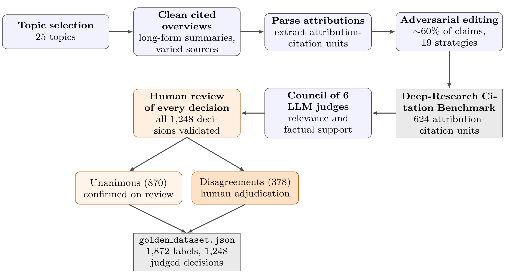
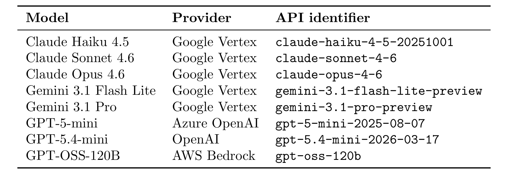
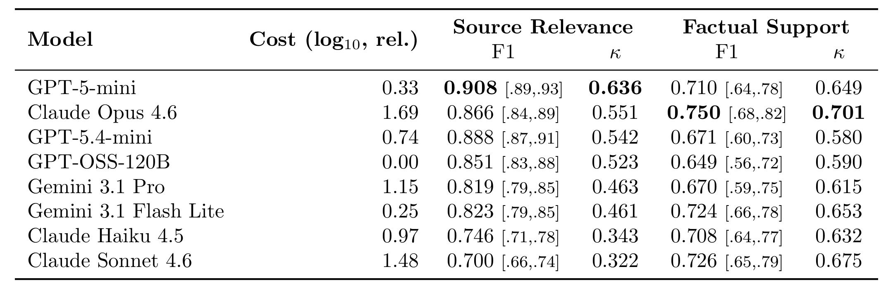
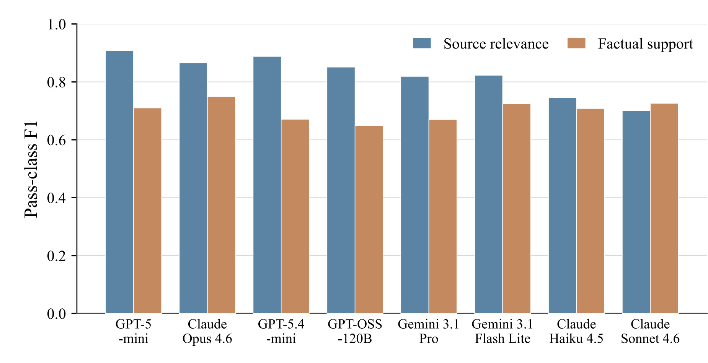
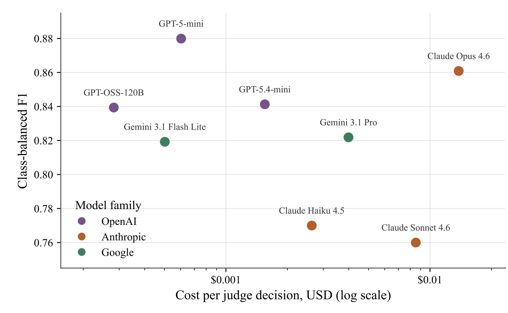
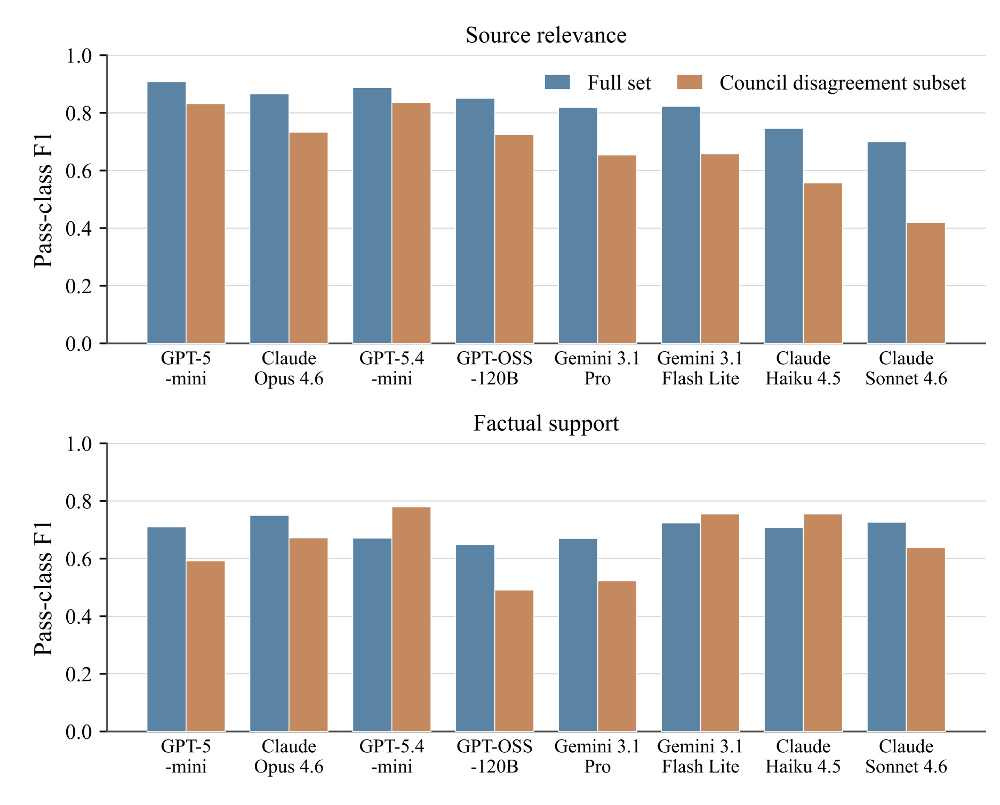
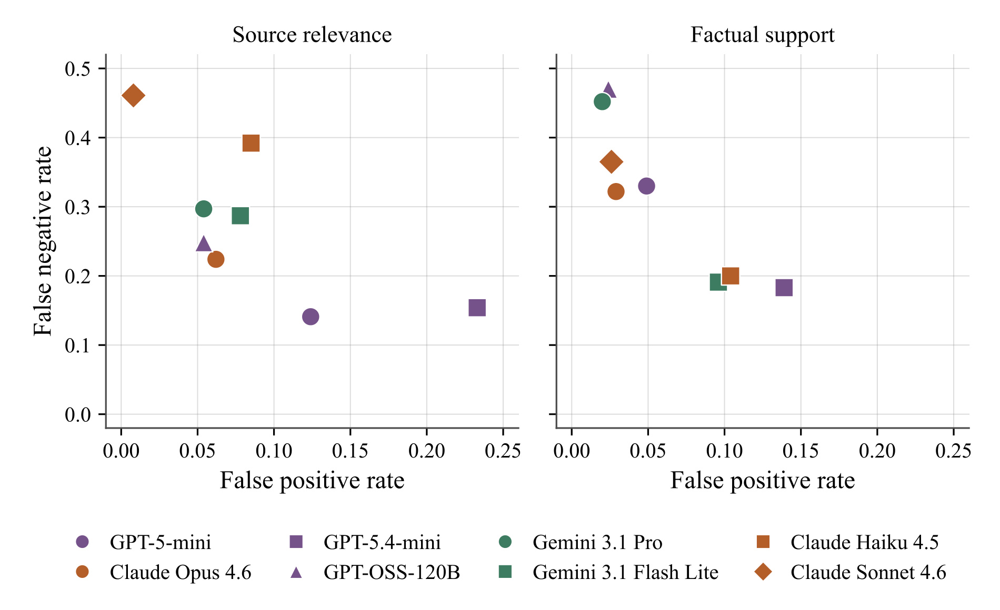

Do You Need a Frontier Model as a Citation Verifier? Benchmarking Rubric LLMs for Deep-Research Source Attribution
这篇论文研究的不是“哪个大模型最会写带引用的答案”，而是更靠后的校准问题：当 deep-research 系统把引用质量拆成 rubric，并让另一个 LLM 逐项打分时，怎样判断这个 judge 足以充当强化学习奖励模型。论文由 PricewaterhouseCoopers U.S. Commercial Technology and Innovation Office 的 Ethan Leung、Elias Lumer、Corey Feld、Austin Huber、Vamse Kumar Subbiah 与 Kevin Paul 完成，2026 年 7 月 9 日公开于 arXiv:2607.08700。arXiv 摘要页与论文正文未给出可独立核验的项目页、代码仓库或数据集下载链接。
在 rubric-based reinforcement learning 中，逐项打分的 LLM judge 实际上就是训练所用的 reward model；如果只凭一个总体 F1 选择 judge，就可能看不见它系统性放过坏引用或拒绝好引用的方向性偏差，而这些偏差恰会成为下游训练持续强化的目标。因而在把 citation rubric 当作奖励信号之前，必须分别校准来源相关性与事实支持能力，而不能先验地把“更昂贵、更前沿”当成“更可靠”。
1. 背景和问题
Deep-research 系统通常先搜索网页，再生成一篇长答案，并把事实性陈述绑定到具体来源。这里的基本评测单位不是整篇答案，也不是一条 URL，而是一个 attribution-citation pair：一段可归因的 claim 与它声称依赖的 citation。一个 URL 可以正常访问，却和 claim 主题无关；也可以讨论同一主题，却没有支持 claim 中的数字、实体或因果关系。于是论文沿用三维 source-attribution 评测：link accessibility 检查链接是否返回成功状态，source relevance 判断来源内容与 claim 是否主题相关，factual support 判断来源是否真正支持 claim 中的事实。第一维可以用 HTTP 规则确定，后两维才需要 LLM judge。
这个拆分很关键。假设 claim 写成“Taylor series 是用于近似函数的有限项之和”，citation 指向一本讨论 Taylor series 的 OpenStax 微积分教材。来源显然相关，所以 relevance 应通过；但教材定义的是无限级数，claim 中“有限”与来源矛盾，所以 support 应失败。如果把两者合并成一个“citation quality”分数，模型可能因为页面谈论同一主题而放过事实错误，也可能因为事实措辞不完全一致而把主题相关性一并判错。论文附录还指出，其 relevance prompt 使用了“是否为 claim 提供 supporting information”这样的措辞，与 factual support 有语义重叠；这正是 council 在“主题正确但事实错误”的来源上产生 disagreement 的常见原因。也就是说，rubric 的边界本身也是 judge error 的来源，不能把所有不一致都归咎于模型能力。
更深一层的问题来自 RLVR。程序可验证任务中，reward 可以由测试用例或形式化规则给出；医疗建议、科学写作、instruction following 和 citation quality 往往没有完整程序验证器，于是工程系统把输出质量分解为多个 criterion，再让 LLM 对每项评分并聚合为标量奖励。此时 judge 不只是“离线评测工具”，而是 operationalized goal：它持续给高分的模式会被 policy 学会，它持续拒绝的模式会从训练信号中消失。若 judge 的 false positive rate 高，它会给坏引用奖励，为 policy 提供可利用的代理目标；若 false negative rate 高，它会压低真实支持引用的奖励，使正信号稀疏，可能把模型推向过度保守、过度限定或减少引用。准确率相近并不意味着训练方向相同。
这也是为什么论文不满足于给出一个 F1 排名。Citation benchmark 中 support 的 gold pass rate 只有 18.4%，类别高度不均衡；一个总是拒绝的 judge 可能获得不差的表面准确率，却几乎无法提供正奖励。pass-class F1 聚焦“通过”类，Cohen's kappa 修正由边际基率造成的随机一致，pass-rate drift 描述 judge 相对 gold 是偏宽松还是偏严格，FPR 与 FNR 再把错误方向拆开。它们共同回答三个不同问题：judge 能否找出应通过的引用、它与人工 gold 的一致是否超出类别基率、它会把奖励错误地推向哪一侧。只报一个综合分，会把这三层问题压扁。
论文还把“要不要 frontier model”改写成一个经验问题，而不是品牌或规模判断。结构化 rubric 可能让较便宜模型足以完成窄任务；反过来，模型整体能力更强也不保证恰好理解 relevance/support 的边界，更不保证错误方向适合下游训练。因此真正应比较的是 per-criterion rubric fit、偏差画像与成本，而不是模型档位。论文最终给出的结论也相当克制：低成本 judge 可以有竞争力，factual support 上没有统计可区分的单一赢家，但任何 judge 在成为奖励信号之前仍需校准。这不是“便宜模型普遍等价于 frontier model”，而是“价格不能替代任务内校准”。
2. 方法
2.1 从长文到 624 个 attribution-citation pair
论文构造 Deep-Research Citation Benchmark 时，先选取 25 个差异很大的主题，包括铁路、历史事件、微积分、神经学、黑洞、量子计算、城市规划、古典陶器、电池回收、深海热泉、加密货币监管、遗传工程等。每个主题先生成带来源的 clean overview，再对约 60% 的 attributed claims 做对抗编辑，剩余 claim 保持 clean。主题跨度的目的不是模拟真实流量分布，而是降低 judge 仅凭某个熟悉领域知识取巧的可能，让评测更聚焦 rubric-following ability。
编辑库包含 19 类策略：错误日期、错误数字、错误实体、否定真值、错误地点、捏造细节、错误归因、数量级错误、来源错配、无关 claim、语义漂移、因果倒置、近似但关键点错误、跨主题事实、部分真实、过度泛化、过时信息、夸大与弱化。同一 claim 可以叠加多种编辑。它们分别攻击来源主题、claim 中的局部事实、因果方向和陈述范围，使 relevance 与 support 不会总是同步变化。解析这些长文后得到 624 个 attribution-citation pair，每一对都要接受两个 LLM criterion 判断，因此产生 1,248 个 LLM-judged decisions。

Figure 1 把容易混淆的数量关系画得很清楚：25 个主题先成为 clean cited overviews，经 pair 解析与约 60% 的对抗编辑形成 624 个 attribution-citation units；6 个 LLM council members 分别判断 relevance 与 factual support，人工再复核全部 1,248 个 decision。870 个 council-unanimous decision 经人工确认，378 个 non-unanimous decision 接受更密集的 adjudication。最终 golden dataset 写有 1,872 个 labels，是因为每个 pair 还有一个确定性的 link-accessibility label，即 \(624+1,248=1,872\)。因此“378”指发生 council disagreement 的 criterion decision，不是 378 个独立 pair；把它写成 378 pairs 会夸大 hard subset 的规模，也会破坏后续 263 个 relevance 加 115 个 support 的分解。
2.2 两阶段 attribution pipeline 与 rubric 边界
benchmark 复用两阶段 source-attribution pipeline。Stage 1 从 Markdown 长答案中抽取 attribution text 与 citation URL，形成可独立评分的 unit；Stage 2 获取 URL content，并依次运行三个 criterion。Accessibility 只检查 URL 是否返回 200，因此没有 LLM prompt，也不进入八模型 judge comparison。Relevance judge 接收 attribution text、URL 与 URL content，判断内容是否讨论同一主题以及是否与 claim 有清晰连接；support judge 接收同样输入，但要求核对具体事实、数字、日期与陈述是否出现、是否一致、是否矛盾。两个 prompt 都输出二元分数与 rationale。
这套流程在未来训练中有两种用法：可以把两维分别作为过程奖励，也可以先校准后聚合为单个 citation reward。无论哪种，criterion separation 都应先于模型选择。若 relevance prompt 把“主题连接”与“事实支持”混在一起，换更大的 judge 不一定解决 rubric ambiguity；若把两个 criterion 聚合后只检查总体 F1，也无法知道 reward 的偏差源自检索主题错配还是事实核验过严。本文的 benchmark construction 因而既在测模型，也在暴露 rubric wording 的问题。
2.3 council、人工复核与 hard cases
Gold label 不是简单多数投票。6 个 labeling judges 分别是 GPT-5-mini、GPT-5.2、Claude Opus 4.5、Claude Opus 4.6、Gemini 2.5 Pro 与 Gemini 3 Pro。人工 reviewer 检查全部 council decisions，修正复核中发现的错误，并对 council 不一致的 decision 给出最终标签。378 个 non-unanimous decisions 中，263 个来自 source relevance，115 个来自 factual support，link accessibility 没有 council 判定，自然也不存在 disagreement。870 个 unanimous decisions 同样经过人工确认，而不是未经检查直接当作 gold。
这种设计比单一 judge 生成标签可靠，但不能把 gold 理解为完全无噪声的客观真理。首先，论文写的是一名 human reviewer，缺少多人工标注者之间的一致性估计；其次，relevance/support 的 prompt overlap 会让争议同时反映样本歧义与 criterion ambiguity；再次，GPT-5-mini 和 Claude Opus 4.6 既参与 gold council，也进入 8 个 evaluated judges，存在一定的评估非独立性。论文用 human-adjudicated disagreement subset 提供较独立的困难案例比较，并指出这两个模型跨越成本区间，不足以单独解释 cost-quality 结论，但复现实验仍应把这种 overlap 当作风险，而不是忽略。
2.4 八模型校准、指标与统计区间
8 个 off-the-shelf judges 来自 Anthropic、Google 与 OpenAI 三个模型家族，每个 judge 都对 624 个 relevance cases 和 624 个 support cases 评分。judge 分数与 gold label 都按 0.5 阈值二值化，pass 为正类。最先报告的是 pass-class F1：
符号解释：\(TP\) 表示应通过且 judge 通过的好引用，\(FP\) 表示 gold 失败却被放过的坏引用，\(FN\) 表示 gold 通过却被拒绝的好引用。该指标把 pass precision 与 pass recall 调和，适合关注“正奖励是否可信”，但一个标量无法指出错误主要来自 \(FP\) 还是 \(FN\)。
论文同时使用 Cohen's kappa：
符号解释：\(p_o\) 是 judge 与 gold 的观测一致率，\(p_e\) 是根据双方边际 pass/fail 比例推算的随机期望一致率。support 只有 18.4% gold pass，若 judge 大量预测 fail，表面 agreement 可能很高；kappa 会扣掉这种由类别基率带来的“容易一致”，所以它与 F1 应联合阅读。
方向性错误分别定义为：
符号解释：FPR 的分母是全部 gold-fail citations，表示坏引用被接受的比例；FNR 的分母是全部 gold-pass citations，表示好引用被拒绝的比例。前者对应训练中过度奖励错误 citation 的风险，后者对应正确行为得不到奖励、正信号变稀疏的风险。为判断这种错误是否伴随整体通过比例偏移，论文还用 pass-rate drift 直接比较 judge 与 gold：
符号解释：\(r_{\mathrm{judge}}\) 是 judge 预测 pass rate，\(r_{\mathrm{gold}}\) 是 gold pass rate；\(Delta>0\) 说明 judge 更宽松，\(Delta<0\) 说明更严格。它不等同于准确率：两个 judge 可以有相似 F1，却一个通过过多、另一个拒绝过多，对 RLVR 的行为塑形方向完全不同。
Figure 3 的质量轴不是 pass-class F1，而是 class-balanced F1：先在每个 criterion 内让 pass 与 fail 两类等权，再跨 relevance 与 support 等权。这样可以缓解 support 正类只有 18.4% 时多数类主导综合分的问题，其完整计算写成：
符号解释：\(d\) 表示 relevance 或 support，\(F_{1,d}^{(+)}\) 与 \(F_{1,d}^{(-)}\) 分别是该 criterion 的 pass-class 与 fail-class F1；第一步得到每个维度的 macro-F1，第二步得到成本图纵轴。这个平均适合画整体质量与价格的关系，却仍会把两个 criterion 和两种错误方向压成一个数，不能替代逐维的 pass-rate drift 与 FPR/FNR 校准。
为避免把有限样本上的点估计直接当作模型真实能力，论文还对每个 criterion 的 624 pairs 做 2,000 次 bootstrap resampling，并用重采样指标分布的 2.5% 与 97.5% 分位数构造 F1 的 95% confidence interval：
符号解释：\(m\) 是待估计的 F1，\(m^{*}\) 是 bootstrap 重采样后得到的指标分布，\(Q\) 表示相应分位数。论文用区间重叠判断 factual support 上没有统计可区分的赢家。严格说，区间重叠不是等价性证明，也不是成对差值的显著性检验；它支持的保守结论是“现有 624 个样本没有解析出稳定 winner”，而不是“八个 judge 的真实能力完全相同”。
3. 实验结果
3.1 judge pool、调用版本与评测口径
8 个 evaluated judges 是 Claude Haiku 4.5、Claude Sonnet 4.6、Claude Opus 4.6、Gemini 3.1 Flash Lite、Gemini 3.1 Pro、GPT-5-mini、GPT-5.4-mini 与 GPT-OSS-120B。它们通过 Google Vertex、Azure OpenAI、OpenAI 与 AWS Bedrock 调用；同一模型家族内部既有低价版本，也有更高档版本。每个 criterion 单独发起一次 judge call，所以一个 attribution-citation pair 对 relevance 与 support 产生两次 LLM 评分。成本按各 provider 在 2026 年 6 月公开的 API pricing 估算，并以最低成本的 GPT-OSS-120B 为相对对数基准。

Table 1 的价值不在“列名单”，而在锁定复现对象。Claude 三个版本通过 Google Vertex，GPT-5-mini 通过 Azure OpenAI，GPT-5.4-mini 直接通过 OpenAI，GPT-OSS-120B 通过 AWS Bedrock；同名模型在不同 serving stack 上的版本、默认参数与价格口径都可能变化。表中精确 API identifier 让后续复现者至少能定位论文比较的 snapshot，而不是拿未来滚动更新版本重跑后直接对比。还要注意，evaluated pool 与 gold council 并不完全相同，但 GPT-5-mini、Claude Opus 4.6 有重叠；因此 hard-subset 的人工 adjudication 比 full-set aggregate 更能检验它们是否只是在复现自己的 council 倾向。
实验中每个 judge 在每个维度都面对相同 624 pairs，共计每个模型 1,248 decisions。accessibility 不使用 LLM，因而其 98.4% pass rate 只描述数据，而不构成模型能力指标。gold relevance pass rate 为 79.3%，support 仅 18.4%；后者是有意通过 adversarial edits 压低的压力测试分布。这个设计有利于观察 judge 是否能拒绝不支持的 citation，却不能直接当作生产 deep-research 的自然错误率。上线系统若有不同检索器、主题分布、claim 长度与正负比例，阈值和偏差都需要重新校准。
3.2 主结果：没有跨 criterion 的单一赢家

Table 2 给出最重要的数值。Source relevance 上，GPT-5-mini 的 pass-class F1 为 0.908，95% CI 为 \([0.89,0.93]\)，kappa 为 0.636；GPT-5.4-mini 的 F1 为 0.888，Claude Opus 4.6 为 0.866，GPT-OSS-120B 为 0.851。另一端 Claude Sonnet 4.6 只有 0.700，CI 为 \([0.66,0.74]\)，kappa 为 0.322，说明 relevance criterion 的模型差异较容易被 624 个样本解析出来。值得强调的是 F1 与 kappa 排序并非完全等价：F1 聚焦 pass class，kappa 还考虑边际基率，一个 judge 若系统性偏严格，会同时降低 recall 并改变 chance agreement。
Factual support 上，Claude Opus 4.6 的点估计 F1=0.750、kappa=0.701，GPT-OSS-120B 的点估计最低为 F1=0.649；但八个 95% CI 从大约 \([0.56,0.72]\) 到 \([0.68,0.82]\) 彼此重叠。因而不能把 Opus 的 0.750 写成统计确认的领先，也不能据此声称更昂贵模型解决了 support。更稳妥的读法是：support 正类稀少、样本不确定性较大，现有 benchmark 没有把模型差距稳定解析出来；下一步应扩大独立样本并做 paired bootstrap 或直接比较成对差值，而不是继续排列点估计。

Figure 2 把跨 criterion 的性能反转显式化。GPT-5-mini 在 relevance 最高，却在 support 只有 0.710，按点估计排在 Claude Opus 4.6、Claude Sonnet 4.6 与 Gemini 3.1 Flash Lite 之后；Claude Opus 4.6 在 support 点估计最高，在 relevance 则低于两个 GPT mini。Claude Sonnet 4.6 更极端：relevance 最低但 support 点估计 0.726 并不差。这个图支撑的不是“给每个 criterion 永远固定不同模型”，而是“judge selection 的单位至少应细到 criterion”。如果为了部署简单只选一个综合 judge，必须检查聚合权重是否与训练目标一致，并确认被牺牲维度的误差方向不会制造奖励漏洞。
3.3 成本不是质量代理变量
为画成本-质量图，论文把每个维度的 pass/fail F1 做 macro average，再跨 relevance/support 平均。成本列采用以 GPT-OSS-120B 为零点的 \(log_{10}\) 相对指数，+1 表示约 10 倍成本。八模型每次 decision 的估算价格横跨约 49 倍。GPT-5-mini 是第三便宜，却取得最高 relevance F1；Gemini 3.1 Flash Lite 是第二便宜，average class-balanced F1 为 0.771，可以与成本最高约 8 倍的模型竞争。

Figure 3 的散点没有形成“更贵就更好”的单调前沿。GPT-5-mini 位于低成本、高 balanced F1 区域；Claude Opus 4.6 质量较高但成本明显更高；Claude Haiku 4.5 与 Sonnet 4.6 成本不低，balanced F1 却处于下方；GPT-OSS-120B 虽是成本基准，综合质量仍有竞争力。这个结果只针对本文固定 prompt、单 criterion 单 call 和 2026 年 6 月价格。若生产系统把多个 criterion 批处理进一次调用，或利用 prompt caching 复用长 URL content，成本排序可能改变；若某个模型延迟更低、吞吐更稳或能在私有环境部署，单价也不是总成本。正确工程结论是先做任务内 calibration，再把质量、方向性偏差、延迟、吞吐和隐私共同纳入选择，而不是用 model tier 代替测量。
3.4 378 个 disagreement decisions 揭示排名迁移
378 个 council-disagreement decisions 是 benchmark 中最模糊的部分：44% 只有一个 labeling judge 反对多数，12% 是均匀分裂，29% 至少出现一个 0.5 partial score，说明虽然 prompt 要求二元标签，部分 judge 在困难样本上仍隐式采用了等级判断。labeling council 的 mean pairwise kappa 在 relevance 上为 0.62，范围 0.50-0.72；support 上为 0.67，范围 0.54-0.83。即便如此，单个 labeling judge 对人工 adjudicated label 的 agreement 在 relevance 仅 38%-85%，support 为 43%-67%，没有一个 judge 在所有 hard cases 上稳定等价于人工裁决。

Figure 4 表明 full-set 排名会在 hard subset 上移动。Relevance 上八个 evaluated judges 全部退化：GPT-5-mini 仍最高，但从 0.908 降至 0.832；Claude Sonnet 4.6 从 0.700 大幅降至 0.420。Support 上变化不是统一下降，GPT-5.4-mini、Claude Haiku 4.5 与 Gemini 3.1 Flash Lite 反而提高；GPT-5.4-mini 从 0.671 升到 0.780，取代 full-set 点估计领先的 Opus 4.6，后者在 hard subset 为 0.672。这里“提高”不能直接解释为困难样本更容易，因为 subset 的类别构成和 error type 也改变了；它更准确地说明 aggregate F1 对样本混合比例敏感，必须单独检查真正会产生 reward disagreement 的边界案例。
八个 evaluated judges 之间的 pairwise agreement 从 76.9% 到 93.6%，对应 kappa 从 0.535 到 0.860，28 个模型对中有 21 对落在 82%-88%。最低一致的一对是 GPT-5.4-mini 与 Claude Sonnet 4.6，也正好有最大的 pass-rate 差：前者通过 49.2% evaluated pairs，后者只通过 28.4%。这进一步说明高 agreement 可能来自共同的严格/宽松倾向，不能单独当作正确性；但低 agreement 确实标记了 reward noise 高的区域，适合触发 ensemble、二次 judge 或人工复核。
3.5 pass-rate drift、FPR 与 FNR 决定奖励偏差方向
Source relevance 上，8 个 judge 的 predicted pass rate 全部低于 79.3% gold pass rate，范围仅 42.9%-72.0%，表现为系统性严格。它们通常 precision 高而 recall 中等：很少把完全无关来源判成相关，却会漏掉一部分实际相关来源。若直接作为 reward，这种负 drift 不太会鼓励明显无关 citation，却会让 policy 更难获得 relevance 正奖励，可能倾向只引用措辞高度重合的页面，牺牲合理但表达不同的证据。
Factual support 的方向更分散。GPT-5.4-mini、Claude Haiku 4.5 与 Gemini 3.1 Flash Lite 的 predicted pass rate 高于 18.4% gold rate，其他模型并不相同。Support FNR 从 GPT-5.4-mini 的 0.183 到 GPT-OSS-120B 的 0.470，意味着有些 judge 会拒绝接近一半的真实支持引用。此时“F1 相近”隐藏了 reward density 的巨大差别：高 FPR 会奖励坏引用并给 reward hacking 留口子，高 FNR 则把好引用也变成零奖励，促使 policy 过度限定、少引用或追求 judge 偏好的字面重合。

Figure 5 以横轴 FPR、纵轴 FNR 展示八个 judge。Relevance panel 中，模型散布从低 FPR/高 FNR 到高 FPR/较低 FNR，说明“更严格”也有不同实现方式；support panel 中，若干点 FPR 接近但 FNR 相差很大，另一些点用更高 FPR 换取较低 FNR。一个只看 F1 的 selection rule 会把这些点压成一维排序，却无法回答训练更怕哪种错误。若目标是防止 fabricated citation，可能愿意容忍较高 FNR 换取低 FPR；若目标是让检索到的真实证据得到密集正奖励，过高 FNR 又会阻断学习。因而校准必须从业务损失出发给两类错误不同权重，并在上线前观察 reward pass rate，而不是照搬本文某个模型的点估计。
需要特别区分本文观测与下游推论：论文实际测量的是 judge confusion profile，并没有训练一个 RLVR policy 来验证最终行为。高 FPR 导致 policy 学会利用宽松 judge、高 FNR 导致 signal sparsity 与 under-citation，都是由 reward mechanism 推出的合理风险，并由既有 rubric-RL 研究支持，但不是本文的因果训练结果。把这部分写成“论文证明某模型会 reward hack”会越过证据边界。
3.6 19 类对抗错误与主要失败来源
论文把 edited claims 按 19 类 strategy 回连，观察八个 judge 对 factual-support 错误的拒绝率。最细微的 wrong attribution、minimization 与 partial truth 约有 86% 被拒，negation 与 semantic drift 接近 100%。这说明 judge 通常不会放过已经编辑的坏 citation；support F1 不够高的主要来源反而是过度拒绝 clean、真实支持的 citation，与 Figure 5 的高 FNR 一致。奖励校准的重点因而不只是在 adversarial negatives 上继续提高检测率，还要为 clean positives 增加覆盖，避免安全性压力测试把 judge 调成“全部拒绝最稳”。
但这个结论仍受汇总口径限制。论文没有给出每种 strategy 的完整样本量、置信区间或八模型逐策略矩阵；“约 86% 到接近 100%”不能外推成每一类错误、每个主题、每个模型都达到同等水平。约 60% claims 被编辑且部分 claim 叠加策略，也会让一个 decision 同时受多类错误影响。更严格的后续实验应按 strategy、主题、clean/edited 状态分层，报告 paired confusion counts，并检查 prompt wording 改动后 error profile 是否稳定。
整体实验支持三条窄结论。第一，source relevance 上低成本 GPT-5-mini 在本文配置中表现最好，frontier price tier 不是必要条件。第二，factual support 的 95% CI 彼此重叠，现有样本不足以确认单一 winner。第三，pass-rate drift、FPR 与 FNR 会在相似 F1 下显著不同，因此 judge 作为 reward model 时必须做方向性校准。它们都不支持“任意小模型都能替代 frontier model”，也不支持“只要 F1 高就可以直接接入 RL”。
4. 总结
4.1 我的判断
这篇论文最有价值的地方，是把 LLM-as-a-judge 从“评测工具选择”提升为“奖励函数设计”。624 个 attribution-citation pairs 并不算大，但论文用两个独立 criterion、全量人工复核、378 个 disagreement decisions、bootstrap CI 与方向性错误指标，展示了一个常被忽视的事实：reward model 的质量不仅是平均上对不对，还包括错时往哪边错。 对 deep-research、RAG 与 agent 系统而言，relevance 和 support 应被视为不同控制点；前者更接近检索与证据连接，后者更接近 claim verification。把两者合成一个分数后再选“最强模型”，会丢掉可操作的诊断信息。
工程上更合理的流程是：先用生产分布构建人工复核 calibration set；分别测每个 criterion 的 F1、kappa、drift、FPR/FNR 与 pass rate；按业务损失确定可接受区间；再在达标模型中比较成本、延迟和部署约束。训练期间还应持续监控 reward marginal 是否漂移，并对高 disagreement 样本触发第二 judge 或人工复核。这样做不要求所有样本都由 frontier model 评分，却要求低成本 judge 的适用边界有证据支持。
4.2 局限与风险
- 数据范围有限。 benchmark 来自一篇跨 25 主题的单一 adversarial long-form report，并非多个独立文档或真实生产请求分布；主题多样性不能替代文档级独立样本。
- 正负基率是人为压力测试。 factual-support gold pass rate 只有 18.4%，有利于检验拒错，却可能放大严格 judge 的特定行为；生产系统需要按自身基率重新校准。
- gold 仍可能含主观性。 全部 decision 虽经人工复核，但论文描述的是单个 human reviewer，未报告多人类标注者一致性；relevance prompt 与 support prompt 的边界重叠也会引入 rubric noise。
- 评估模型与 labeling council 有重叠。 GPT-5-mini 和 Claude Opus 4.6 同时参与 gold council 与候选评测，hard subset 的人工 adjudication 缓解了问题，却没有完全消除潜在相关性。
- 统计结论不能等同于能力等价。 factual-support CI 重叠表示当前样本没有解析出稳定差异，不是八模型等价性证明；逐策略、逐主题的样本量与成对显著性仍未报告。
- 成本口径会漂移。 结果基于 2026 年 6 月 API 价格和每 criterion 一次 call；batching、prompt caching、上下文长度、吞吐、重试与私有部署都会改变真实总成本。
- 没有下游训练闭环。 论文没有实际比较不同 judge 驱动的 RLVR policy，关于 over-reward、signal sparsity、over-hedging 与 under-citation 的影响仍需因果实验确认。
4.3 后续跟进
- 做 paired、分层的统计比较。 在更多独立文档上按主题、strategy、clean/edited 与 criterion 分层，报告模型间成对 bootstrap 差值，而不只看单模型 CI 是否重叠。
- 重写并消融 rubric。 从 relevance prompt 移除容易与 factual support 混淆的“supporting information”措辞，比较 disagreement rate、kappa 与错误方向是否改善，验证问题究竟来自 judge 还是 criterion definition。
- 完成 RLVR 因果闭环。 用高 FPR、低 FPR/高 FNR、ensemble 三类 judge 分别训练同一 policy，观察 citation precision、citation recall、引用数量、hedging 与 reward hacking，验证方向性偏差是否按预期传导。
- 引入 uncertainty-aware routing。 对低置信、模型不一致或位于 hard-subset 特征区间的 decision，升级到更强 judge 或人工复核；对稳定 easy cases 使用低成本 judge，比较质量-成本 Pareto frontier。
- 监控生产 reward drift。 上线后持续抽样人工复核，按时间、领域、检索深度与来源类型统计 pass rate、FPR/FNR，避免模型更新、价格变化或检索分布漂移让离线校准失效。
最终应把标题中的问题回答成一句有条件的话：不一定需要 frontier model，但一定需要与目标 rubric、数据基率和下游错误成本相匹配的校准。 论文证明低成本 judge 在这个 citation benchmark 上可以竞争，也证明任何“只看 F1、忽略方向”的选择都会把未知偏差带进奖励函数。对推荐与大模型工程同样适用的不是某个模型名单，而是这套以 criterion、置信区间和错误方向为中心的验收方法。